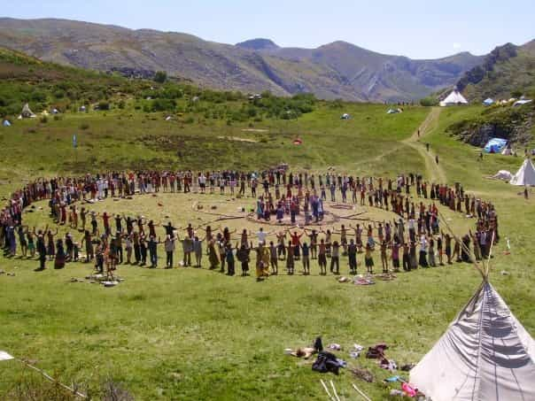

< < < Back
3 Important Lessons I Learned About Civilization From Living In A Hippie Commune – Return Of Kings
Every year, over 15,000 hippies flock to a national forest and set up an entire civilization for 2 weeks. This is known as the “Rainbow Gathering.” They walk into the middle of a national forest, dozens of miles away from civilization, and just start building. Kitchens, water supplies, shit houses, tents—they build everything out of the logs and trees in the forest, nothing is wasted. Even an economy emerges based off of the bartering system.
I had known about this event for quite some time, and had always wanted to go. Not because I aspired to be a wandering vagabond, but because I thought it would be interesting to see how civilizations are built, how the bureaucracy evolves, and how human nature plays a role in all of this.
I wanted to get a taste of what it was like for the English settlers to found America. I wanted to see how the women acted, what would happen to gender roles, what the legal system, medical system, and leadership system would look like.
The only problem was that you can only gain access to the gathering if you know somebody, who knows somebody, who knows somebody, all the way back to the “Grand Elders” who determine its location (it changes every year). They do this to keep the “weirdos” or “sociopaths” out, lest they take advantage of anyone.
Fortunately for me, I found someone who had this connection. I ran into this cute little hippie girl that I hadn’t seen in years—we talked for a while, and I found out that she was going to Rainbow Gathering. I told her that I’d always wanted to go, and she invited me along.
Over the course of a week, I helped to build a miniature civilization. I cooperated with the medics, the local park rangers, I helped build the kitchens, and I had my fair share of bonfire parties as well. I saw what the women acted like when they were free from the confines of society, and I saw both the generosity and selfishness in human nature.
Here’s three lessons that I learned from the Gathering:
1. Most Human Beings Are Lazy… And This Is Fine
When I first arrived at the campgrounds, the civilization was just starting to emerge. There were a few rudimentary kitchens, a water supply, some paths laid down, and a couple of shit houses. This may sound like a lot, but it’s not enough to support nearly 15,000 people.
The first thing that I did when I got there was get involved – I spent hours gathering logs for the kitchens to make fire, I spent the better part of a day digging a latrine, and I helped build a giant table for one of the kitchens to make food on. And do you know what I learned?
Most people are fucking lazy.
About 90% of the people there didn’t contribute anything to the society – they simply sat around, got high or drunk, and reaped all of the rewards that the hard working men fought for. And this is just fine. Do you know why? It’s because the people who were actually willing to put in hard work had it much better off. When I spent hours helping the kitchens, do you think that they fed me the same scraps that they gave the other 90% of people?
No. Together, we feasted like kings – and we deserved it, because we put in the work. When there was a new shipment in of alcohol or of good quality meat, who do you think the first were to taste it? We were, because we put in the work. When the food trucks came in every day, bringing news of incoming travelers who do you think the first were to hear it? We were.
Technically, there was no power hierarchy – but there was sort of an unofficial one that started to emerge. And do you know who it was comprised of? The people that actually did the work.

Most people just did this all day
Basically, the people who put in the effort to build the society had all of the resources—this is the way that it naturally is. One problem that became abundantly clear was that in “regular society,” this is obviously not the case.
In regular society, you can work your ass off day in and day out, and you won’t get shit. In regular society the power isn’t given to the people who put in hard work – it’s handed down, and some little punk gets it, because his great, great, great, great grandfather worked to earn it in the past.
When you’re living in an emerging civilization, you don’t care all that much if others are lazy, because you know that if you work hard, you’ll get more access to food, resources, and women, which brings me to my next point…
2. Natural Gender Roles Emerged
When you’re living in the middle of the forest, there is no “we’re all equal” bullshit. The men were the ones who did the heavy lifting – they carried logs around, lugged water jugs around, dug shit holes, and built community buildings. The women (the ones who participated, at least) were in the kitchen where they belonged.
I do not mean this in some sort of a derogatory way, but the fact of the matter is that it becomes abundantly clear that men and women are different when you aren’t safe within the confines of civilization. There was one moment that really illustrated this lesson for me.
It was late at night – I have no idea when, because we didn’t go by time in the forest, we went by sunrise and sunset, but the point is that it was very dark. I was sitting around a giant bonfire with about 35 people. Behind us was “stockpot,” where all of the kitchen supplies were stored, and to the right was a campground. There were several little “outposts” like this set up throughout the forest, consisting of a kitchen, a bonfire, and a campground. They each had different names, and they were roughly 2-3 miles apart.
A group of women stood up, and slowly walked to the edge of the little “outpost” that we had set up. What were they doing? They looked kind of nervous, but I couldn’t tell what was going on. And then it hit me. They realized that they couldn’t walk through the forest alone back to their campground. They needed a man to protect them.
One of the men, I’m going to call him Jack, was a natural alpha male. He had been in charge of the kitchen and various logistical issues – he saw immediately that the women needed protection, and he volunteered to walk them back to their camp ground. I’m sure that the women were very grateful for Jack’s protection – who knows, maybe he slept with one (or five) of them. Either way, when a civilization is just emerging, women develop a natural appreciation for men, and men develop a natural desire to protect women.
It leads to a much more cohesive society—relationships form much more smoothly. This is in part why we’re seeing so many problems in Western civilization.

Nope – no feminists here.
Women don’t appreciate men, because they don’t need us anymore – in the forest, they needed us for protection. They needed us to build civilization. In the West, they don’t need shit because “Daddy Government” handles everything for them. This creates a sense of spite between the genders – men recognize that they aren’t appreciated and are practically worthless, so they come to develop a cynical, bitter view towards women
3. Women Are Attracted to Power… And This is A Good Thing
Like I said before, plenty of men develop a very cynical attitude towards women. This is only exacerbated in our society by the rampant “power-sluts”—women who will fuck any man who has power, so that they may get a taste of it.
In the forest, I came to accept that this was the natural way of things—women want men who have power. However, I realized that this is only a bad thing when you live in a very well established civilization, such as the West. The reason for this, as I alluded to before, is because the men who have all of the power in the West are manipulative, greedy elites who have a deep sense of hatred for the general public. So obviously, it isn’t very comforting that women are attracted to these men.
However, in the forest, the men who had the power weren’t the ones that were manipulative – in fact, it was quite the opposite. At The Gathering, the men who had the power were the ones who were selfless. The man who was willing to walk those women home, Jack, is a great example of this.
He spent hours every day organizing logistical issues, because he cared about the well-being of the tribe. He was always coordinating with the “food trucks,” men who would drive into town and bring food back for the people, he was always hard at work collaborating with the women in the kitchen to make sure that dinner was on time, and he was always welcoming newcomers.
The man even helped to build a “kid village,” for god’s sake—a designated daycare center for children that was to be free of drugs and alcohol. So when somebody had a question or an issue, who do you think they went to? They went to Jack. When there was a conflict between the men or the women, who do you think they went to? They went to Jack.
So what we start to see is that the men who are actually selfless and care about the tribe slowly become the leaders. People began to look up to Jack for guidance – and why wouldn’t they? He was the one who was putting so much effort into helping our civilization grow. I saw some of this myself, as well. As I began to help out more and more in the kitchen, I started to rub shoulders with some pretty cool guys.
Soon enough, I was a messenger – I ran between the kitchens (sometimes running 10-15 miles a day) coordinating who had what supplies and if they were short on butter, olive oil, beans, or some other essential cooking food. So when people in the kitchens had a question, who do you think they went to? They went to me. When a group of men wanted to have “seconds” (the kitchen served breakfast and dinner every day), I got to decide if we should give out our valuable resources to them. If they were assholes, they wouldn’t get a single grain of rice.
I began to become a leader, just like Jack – not because I was a greedy, power hungry, manipulative wall street exec, but because I was a man who cared about the tribe and put in effort to make things better. And that’s the difference – in a “baby civilization,” women fuck the hard working men who protect the tribe. In the West, they fuck spoiled, rich trust fund babies who don’t give two fucks about the world’s suffering.
There is no way in hell that this girl would have any power in the forest
Women’s biology can’t distinguish between the two – they’re attracted to power, plain and simple. And like I said, this isn’t inherently a bad thing. In fact, I’d say it was a good thing for 99% of history.
But when a civilization devolves into what it is today, where the men in power are corrupt, selfish, evil human beings, it clearly becomes a bad thing. The problem isn’t women’s nature, it’s our dogshit society that puts evil, corrupt men in power.
 If you like this article and are concerned about the future of the Western world, check out Roosh's book Free Speech Isn't Free. It gives an inside look to how the globalist establishment is attempting to marginalize masculine men with a leftist agenda that promotes censorship, feminism, and sterility. It also shares key knowledge and tools that you can use to defend yourself against social justice attacks. Click here to learn more about the book. Your support will help maintain our operation.
If you like this article and are concerned about the future of the Western world, check out Roosh's book Free Speech Isn't Free. It gives an inside look to how the globalist establishment is attempting to marginalize masculine men with a leftist agenda that promotes censorship, feminism, and sterility. It also shares key knowledge and tools that you can use to defend yourself against social justice attacks. Click here to learn more about the book. Your support will help maintain our operation.
Read More: 5 Things I Learned From My Second Time In Jail